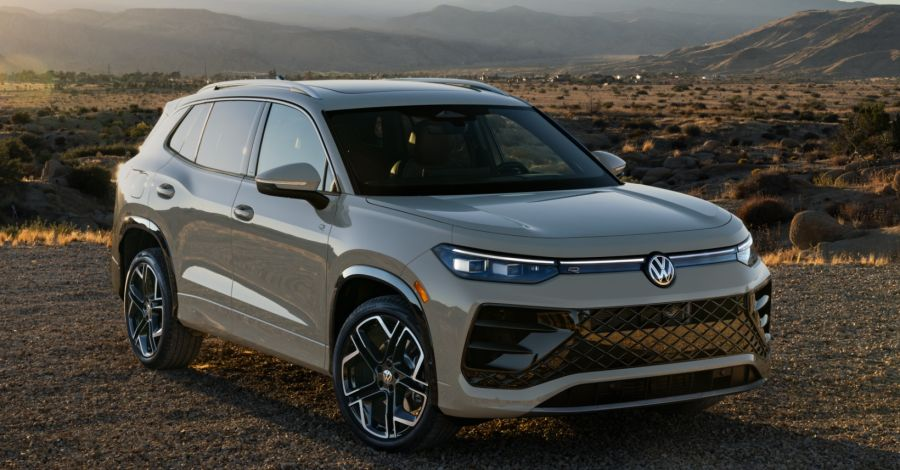

CATEGORÍA
SUV
Una alternativa que combina espacio, comodidad y versatilidad para diferentes tipos de uso.

¿Por qué elegir una SUV?
Las SUV se hicieron populares por ofrecer una combinación entre espacio interior, comodidad y una posición de conducción más elevada.
Pueden ser una opción interesante para familias, personas que realizan viajes o usuarios que necesitan mayor espacio.
Principales características
Espacio
Suelen contar con un interior amplio y una buena capacidad de carga.
Comodidad
Están pensadas para brindar comodidad tanto en ciudad como en viajes.
Versatilidad
Existen modelos destinados a diferentes necesidades y estilos de conducción.
¿Buscás una SUV?
Completá el formulario para contarnos tus necesidades.
Solicitar asesoramiento